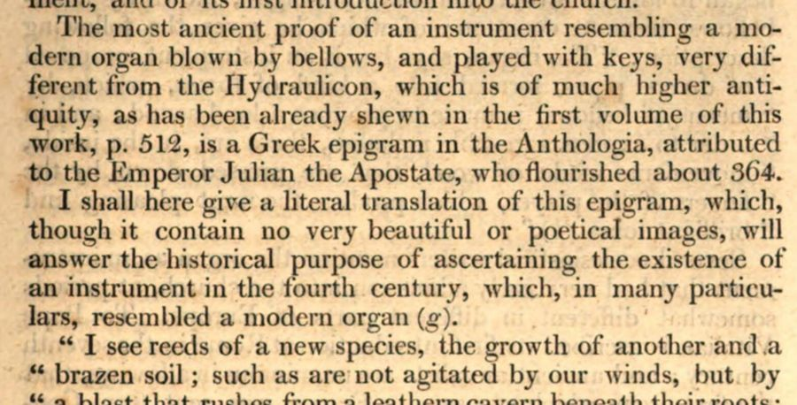

The epigram attributed to Julian (vol. II, pp. 65–66)
English: London 1782, vol. II, ch. I, pp. 65–66, scans n72–n73. Burney prints the Greek in a footnote, which is not transcribed here. Highlighted: what Lecky’s note depends on.

The most ancient proof of an instrument resembling a modern organ blown by bellows, and played with keys, very different from the Hydraulicon, which is of much higher antiquity, as has been already shewn in the first volume of this work, p. 512, is a Greek epigram in the Anthologia, attributed to the Emperor Julian the Apostate, who flourished about 364.
I shall here give a literal translation of this epigram, which, though it contain no very beautiful or poetical images, will answer the historical purpose of ascertaining the existence of an instrument in the fourth century, which, in many particulars, resembled a modern organ.
“I see reeds of a new species, the growth of another and a brazen soil; such as are not agitated by our winds, but by a blast that rushes from a leathern cavern beneath their roots; while a robust mortal, running with swift fingers over [p. 66] the concordant keys, makes them, as they smoothly dance, emit melodious sounds.”
Nothing material is omitted in the version of this epigram, or rather enigma, upon the organ, though not a very ingenious one …
Lecky’s ch. III note 82: “There had before been known a water organ, called an hydraulicon. There was also a wind instrument which some have placed among the antecedents of the organ, but which seems to have been almost exactly the same as a Scotch bagpipe. I am sorry to say Julian had the bad taste to praise it in one of his epigrams. (See Burney, Hist. of Music, vol. ii. pp. 65–67.)” Burney’s pages give the hydraulicon and the epigram, but he calls the epigram an “enigma, upon the organ”, says only that it is “attributed” to Julian, and translates its instrument as one with keys. The bagpipe is Lecky’s reading. Burney’s p. 66 goes on to Cassiodorus’s description of the bellows organ, which is probably what Lecky’s “67” covers.
Further down the rabbit hole
Sources that Lecky cites in the notes next to the ones that cite this page.
- Agobard, Liber de imaginibusLecky’s five Agobard quotes checked against Baluze
- Aquinas, Summa theologiae, Supplement, q. 94Lecky’s quotation that is really a paraphrase
- Augustine, De TrinitateNobody knows what Christ looked like
- Augustine, De civitate DeiSeventy reports, not miracles, and a town, not a province
- Augustine, De natura et gratiaLecky’s three tiny changes to Augustine’s exception
- Barrington, Observations on the More Ancient StatutesHenry VIII’s 72,000 hangings, and why English thieves had “better hearts”


Backlinks
Every place in Rationalism in Europe that links to this page (generated automatically when the site is built).
- Chapter III: note 82